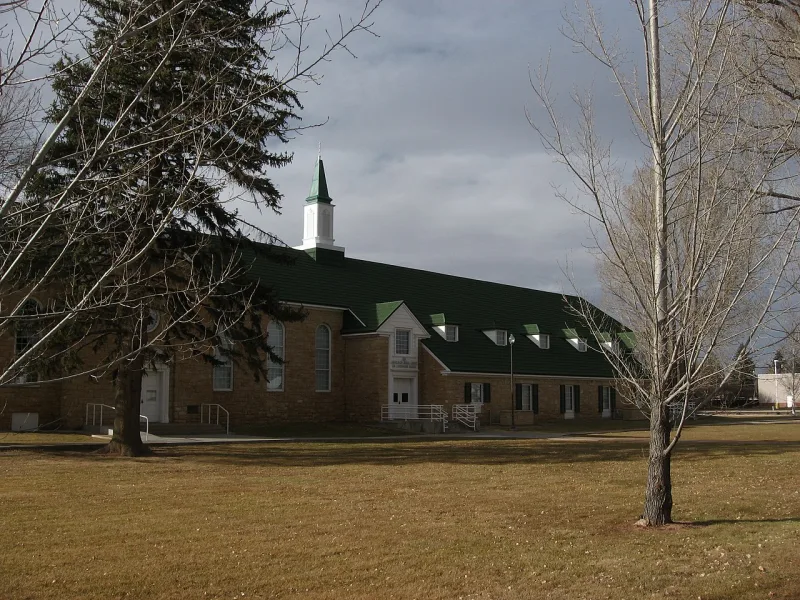

No good counter-argument has been published by LDS scholars.
You write to your bishop. The request goes on to the stake president.
There are waiting periods. Leaders reach out to you.
Many people who resign say the visits and calls went on. They went on even after they had asked to be left alone.
A Utah attorney named Mark Naugle set up a free service, QuitMormon.com. It sends the resignation as legal representation.
The church then deals with a lawyer, not with the member. Since 2015 it has processed on the order of 150,000 resignations.
The church added a notarisation requirement for QuitMormon submissions. It cited fraudulent requests.
That added a step, and friction, to resigning through a third party.
The General Handbook already sets out a free official path. A member writes to the bishop and asks that the record be removed.
The request is to be honoured. Leaders are told to check who the person is.
They are told to make sure the person knows what follows. The church says those steps guard against fake or rushed removals.
It says the 2019 rule came after real fake requests. Some were pranks that resigned other people.
Follow-up contact is care from lay leaders, who are taught to answer with love. And any member may simply stop coming, with no penalty at all.
Strong for you, and keep it factual. The scale of QuitMormon has been reported in the mainstream press.
Both sides confirm the 2019 rule. And the reports of contact after leaving are many.
A legal buffer is the whole point of the service. What is argued here is motive, not fact.
"If leaving is simple, why do a hundred and fifty thousand people need a lawyer to do it?"

There is a free path in the Handbook, and real fake requests came first.
The General Handbook already sets out a free official path. A member writes to the bishop and asks that the record be removed. The request is to be honoured.
Leaders are told to check who the person is, and to make sure they know what follows. The church says those steps guard against fake or rushed removals. It says the 2019 notary rule came after real fake requests, including pranks that resigned other people.
Follow-up contact is care from lay leaders, who are taught to answer with love and not to pester. And any member may simply stop coming, with no penalty at all.
Strong for you, and keep it factual: what is argued here is motive, not fact.
The facts hold up. The scale of QuitMormon, on the order of 150,000 resignations since 2015, has been reported in the mainstream press. Both sides confirm the 2019 notary rule. And the reports of contact after leaving are many.
A legal buffer is the whole point of Mark Naugle's service, and it exists because of those reports.
What is argued here is motive: care for the member, or pressure to keep them.